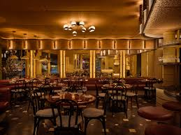

New York City is a food lover’s paradise, offering an incredible variety of restaurants to satisfy every palate and budget. From Michelin-starred fine dining establishments like Eleven Madison Park and Le Bernardin to classic diners and street food carts, the city’s culinary scene is unmatched. Visitors can explore diverse cuisines from around the world, including Italian in Little Italy, Chinese in Chinatown, and Dominican in Washington Heights. For a true NYC experience, try a slice of New York-style pizza, a bagel with lox, or a classic hot dog from a street vendor. Whether you’re in the mood for a romantic rooftop dinner, a trendy brunch spot, or a casual food truck meal, New York City’s endless dining options ensure you’ll never go hungry.
Restaurants Flatrion New York Restaurant Street Pizza Carmine Wo Hop Manhatta Piccola Cucina Estiatorio The Smith Benito One
